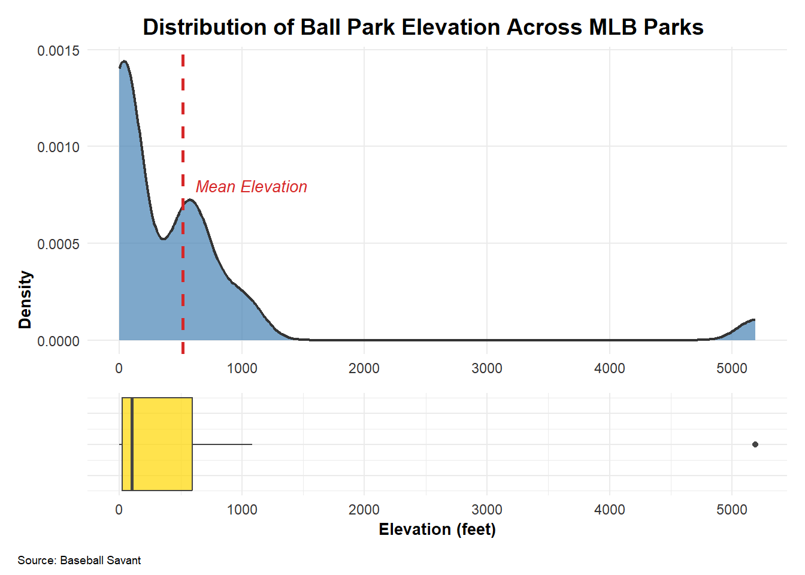
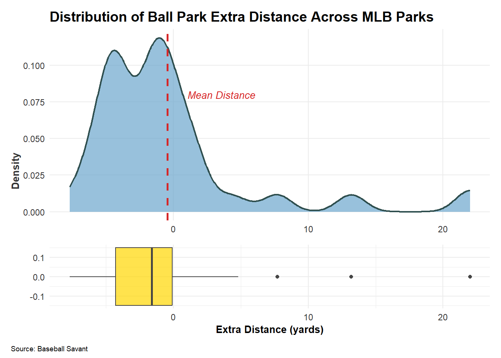
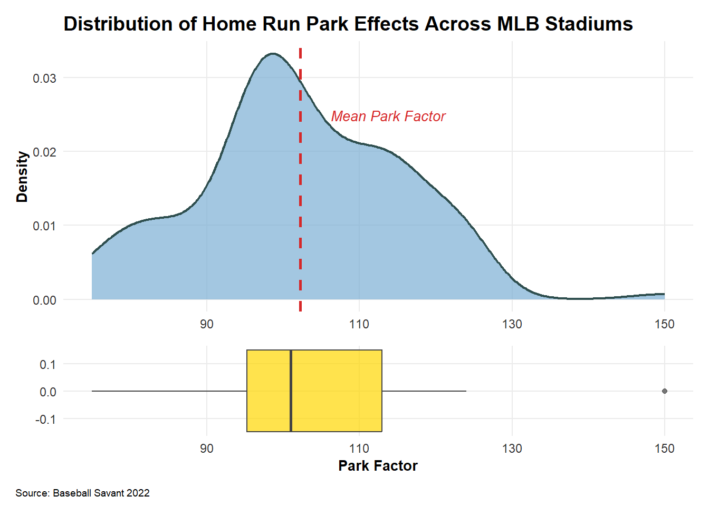
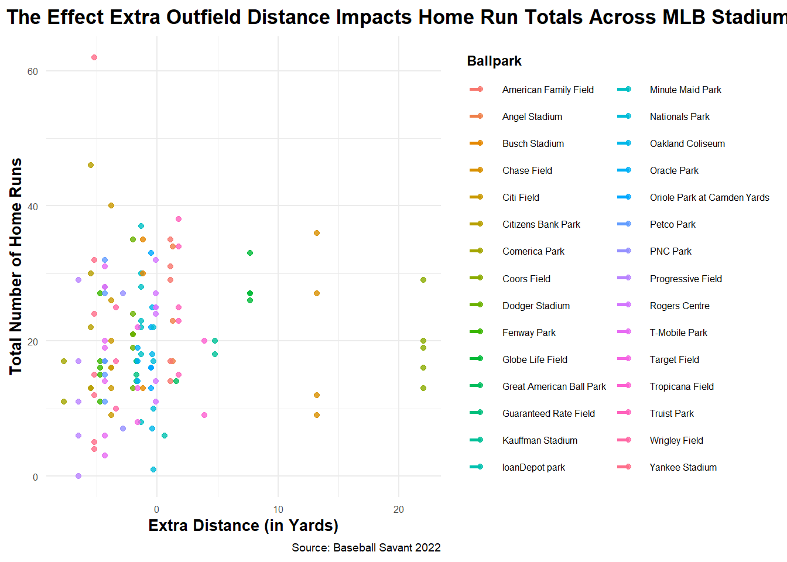
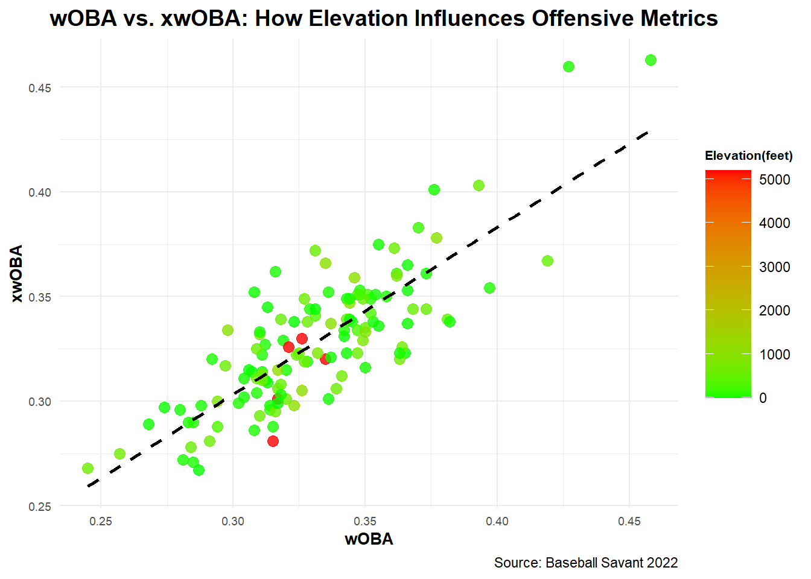
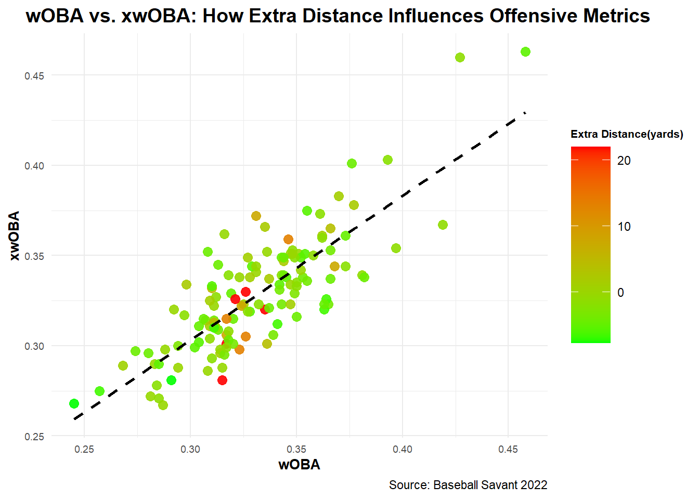
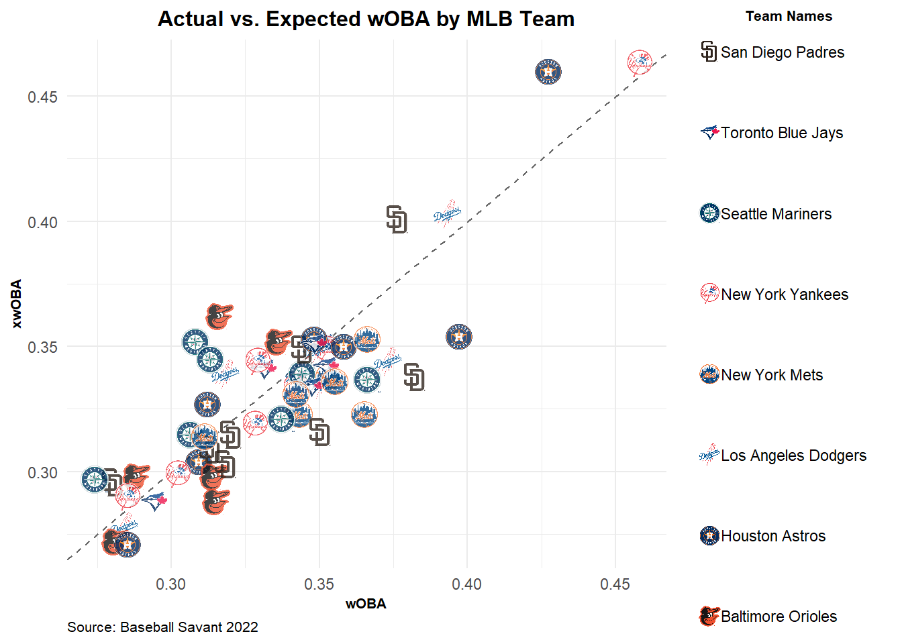
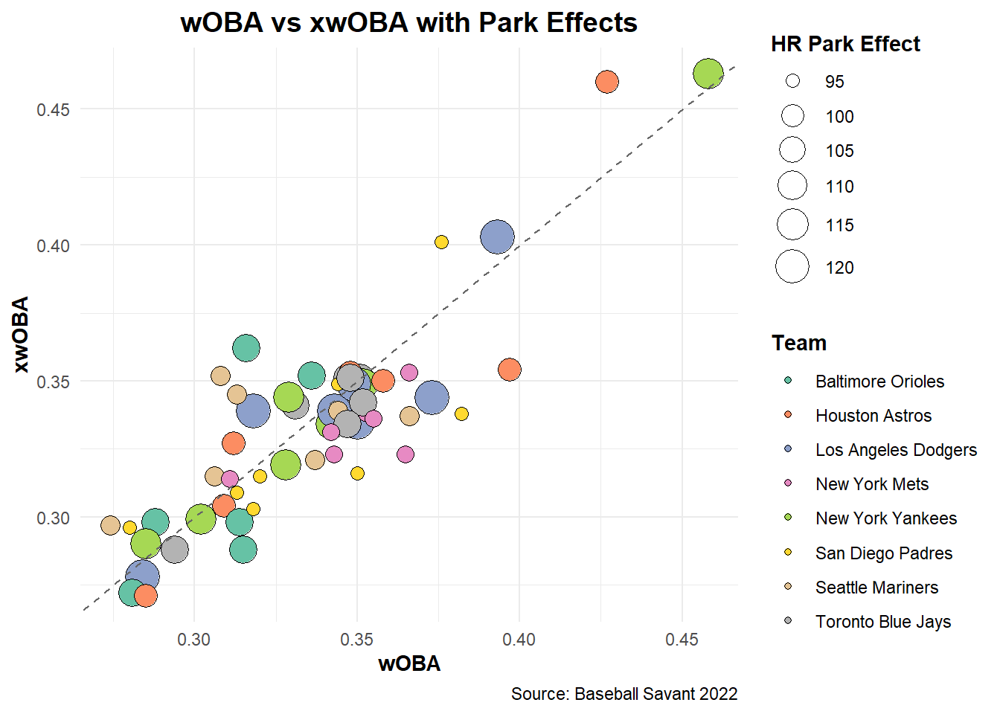
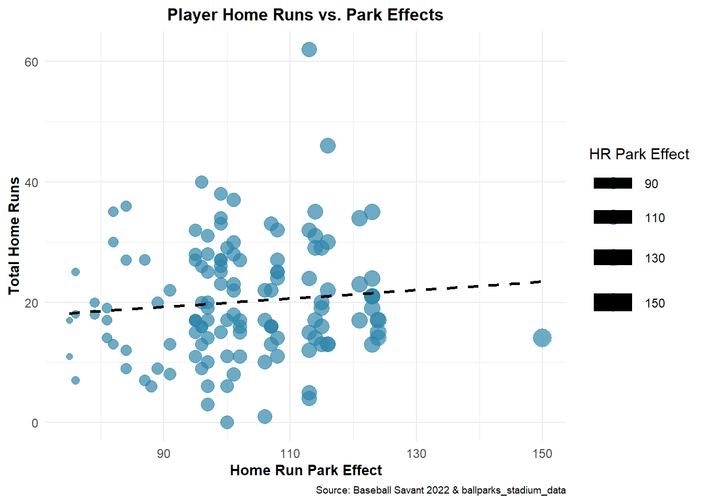

Warning: package 'patchwork' was built under R version 4.4.3Evaluating the Effects of Park Factors on Offensive Performance
Rows: 30 Columns: 14
── Column specification ────────────────────────────────────────────────────────
Delimiter: ","
chr (3): abrev_team_name, team_name, ballpark
dbl (11): left_field, center_field, right_field, min_wall_height, max_wall_h...
ℹ Use `spec()` to retrieve the full column specification for this data.
ℹ Specify the column types or set `show_col_types = FALSE` to quiet this message.Rows: 130 Columns: 28
── Column specification ────────────────────────────────────────────────────────
Delimiter: ","
chr (1): last_name, first_name
dbl (27): player_id, year, pa, hit, single, double, triple, home_run, battin...
ℹ Use `spec()` to retrieve the full column specification for this data.
ℹ Specify the column types or set `show_col_types = FALSE` to quiet this message.Joining with `by = join_by(team_name)`Izzy’s Intro Parts will go here
How Ballparks Influence Offensive Performance
Baseball is unique among major sports in that each team’s home field can vary significantly in its dimensions and environmental conditions. Unlike the standardized courts and fields used in basketball or football, Major League Baseball stadiums differ widely — from outfield wall height and distance to foul territory and elevation. These physical characteristics, known collectively as park effects, can have a significant impact on offensive performance. Whether it’s a fly ball turning into a home run or a double dying at the warning track, the stadium itself becomes a player in the game. In this article, we explore a few of the most influential park effects — focusing specifically on elevation, extra outfield distance, and home run park factor — to better understand how ballparks shape the game’s offensive metrics.
The Role of Elevation
One of the most important — yet often overlooked — physical features influencing offense is elevation. Ballparks located at higher altitudes, such as Denver’s Coors Field, have thinner air due to lower atmospheric pressure. This reduced air resistance allows baseballs to travel farther, increasing the likelihood of extra-base hits and home runs. As a result, elevation can significantly inflate offensive statistics, making it essential to consider when comparing player performance across different ballparks.
To illustrate this, the figure below shows the distribution of stadium elevations across Major League ballparks, highlighting the stark contrast between high-altitude parks and those at or near sea level.

Discuss elevation plot distribution
Extra Distance in the Outfield
Beyond elevation, the distance from home plate to the outfield walls — or “extra distance” — plays a significant role in determining offensive success. Ballparks with deeper outfields tend to suppress home runs, giving pitchers an edge by demanding greater power to clear the fences. On the other hand, parks with short porches or shallow gaps can inflate home run totals and alter hitting strategies.
The following figure explores the distribution of extra distance across MLB stadiums, helping us visualize how varying field dimensions contribute to the offensive landscape.

discuss the distance plot
Understanding Park Factors
Lastly, park factors — sometimes referred to as park effects — are composite metrics designed to quantify how a stadium impacts offensive production relative to league norms. These values incorporate a range of influences, including stadium dimensions, altitude, and even typical weather conditions. Calculated from historical data on runs, hits, home runs, and other offensive stats, a park factor above 100 signals a hitter-friendly environment, while values below 100 denote a pitcher’s park.
The chart below displays the distribution of park factors across MLB stadiums, offering a clearer picture of how each park may shape in-game performance.

discuss park effect distribution
Linking Physical Features to Offensive Output
While it’s clear that ballpark characteristics can influence offense, it’s important to examine how specific variables relate directly to offensive metrics — particularly home run totals. By comparing elevation and outfield distance to the number of home runs hit at each stadium, we can gain insight into which physical attributes have the most measurable impact. These visualizations help move beyond assumptions and allow for a more data-driven understanding of park effects.
Elevation vs. Home Runs
The first plot explores the relationship between a stadium’s elevation and its total number of home runs. Given that thinner air at higher altitudes reduces drag on a baseball, we expect to see more home runs in elevated stadiums. This visualization allows us to test that hypothesis and spot outliers where home run rates may not align with elevation alone.
**add plot here
Extra Distance vs. Home Runs
Next, we look at how extra distance — the average length from home plate to the outfield wall — correlates with home run totals. Intuitively, greater distance should suppress home runs, while shorter dimensions should lead to more. This chart reveals whether that trend holds across the league and which parks defy the expected relationship.
`geom_smooth()` using formula = 'y ~ x'
**discuss the extra distance vs homeruns plot
From Ballparks to Batters: Evaluating Performance with wOBA After exploring how park features shape overall offensive output, the next logical step is to assess how these environments influence individual player performance. To do this, we turn to wOBA (weighted On-Base Average), a comprehensive offensive metric that assigns value to each outcome (walks, singles, doubles, etc.) rather than treating all times on base equally. Unlike traditional stats, wOBA better captures a player’s true offensive contributions.
By comparing actual wOBA to expected wOBA (xwOBA) — which is based on quality of contact (exit velocity, launch angle, etc.) — we can evaluate how much a player’s environment may have helped or hurt their results. This progression from park-level analysis to player-level metrics allows us to ask: are some players over- or under-performing expectations because of where they play?
wOBA Discrepancies by Elevation
In the first plot, each player’s actual vs. expected wOBA is shown, with color indicating the elevation of their home stadium. This lets us examine whether high-elevation parks systematically inflate actual performance compared to expected metrics, potentially due to the reduced air resistance at altitude.
`geom_smooth()` using formula = 'y ~ x'
wOBA Discrepancies by Extra Distance
The second visualization repeats the comparison, this time coloring players by their park’s average outfield distance. If players in shorter parks tend to outperform expectations, this could suggest that geometry — not just skill — plays a large role in statistical outcomes.
`geom_smooth()` using formula = 'y ~ x'
Team-Level Trends in wOBA Discrepancies
To round out our analysis, we broadened the lens from individual players to team-level performance by comparing each team’s actual wOBA vs. expected wOBA. This gives a higher-level view of whether entire lineups tend to outperform or underperform relative to what their batted-ball data suggests. Such differences may reflect the cumulative impact of park effects, coaching strategies, or even player profiles tailored to specific environments.
Warning: package 'gridExtra' was built under R version 4.4.3
Attaching package: 'gridExtra'The following object is masked from 'package:dplyr':
combine
discuss the woba vs xwoba graph
Highlighting Park Factors with Visual Emphasis
To deepen this comparison, we created a second version of the team plot in which each team’s point is scaled by its park factor. This allows us to visually emphasize how hitter- or pitcher-friendly environments correlate with discrepancies between actual and expected offensive output. Teams in more hitter-friendly parks may appear further above the identity line, suggesting that the stadium may be inflating results beyond what expected metrics alone would predict.

discuss the distribution of the graph
# A tibble: 6 × 43
abrev_team_name team_name ballpark left_field center_field right_field
<chr> <chr> <chr> <dbl> <dbl> <dbl>
1 ATL Atlanta Braves Truist … 335 400 325
2 ATL Atlanta Braves Truist … 335 400 325
3 ATL Atlanta Braves Truist … 335 400 325
4 ATL Atlanta Braves Truist … 335 400 325
5 ATL Atlanta Braves Truist … 335 400 325
6 AZ Arizona Diamondb… Chase F… 328 407 335
# ℹ 37 more variables: min_wall_height <dbl>, max_wall_height <dbl>,
# hr_park_effects <dbl>, extra_distance <dbl>, avg_temp <dbl>,
# elevation <dbl>, roof <dbl>, daytime <dbl>, `last_name, first_name` <chr>,
# player_id <dbl>, year <dbl>, pa <dbl>, hit <dbl>, single <dbl>,
# double <dbl>, triple <dbl>, home_run <dbl>, batting_avg <dbl>,
# slg_percent <dbl>, on_base_percent <dbl>, on_base_plus_slg <dbl>,
# isolated_power <dbl>, xba <dbl>, xslg <dbl>, woba <dbl>, xwoba <dbl>, …# A tibble: 20 × 43
# Groups: hr_park_effects [4]
abrev_team_name team_name ballpark left_field center_field right_field
<chr> <chr> <chr> <dbl> <dbl> <dbl>
1 ATL Atlanta Braves Truist … 335 400 325
2 ATL Atlanta Braves Truist … 335 400 325
3 ATL Atlanta Braves Truist … 335 400 325
4 ATL Atlanta Braves Truist … 335 400 325
5 ATL Atlanta Braves Truist … 335 400 325
6 AZ Arizona Diamond… Chase F… 328 407 335
7 AZ Arizona Diamond… Chase F… 328 407 335
8 AZ Arizona Diamond… Chase F… 328 407 335
9 AZ Arizona Diamond… Chase F… 328 407 335
10 BAL Baltimore Oriol… Oriole … 333 400 318
11 BAL Baltimore Oriol… Oriole … 333 400 318
12 BAL Baltimore Oriol… Oriole … 333 400 318
13 BAL Baltimore Oriol… Oriole … 333 400 318
14 BAL Baltimore Oriol… Oriole … 333 400 318
15 BAL Baltimore Oriol… Oriole … 333 400 318
16 BOS Boston Red Sox Fenway … 310 420 302
17 BOS Boston Red Sox Fenway … 310 420 302
18 BOS Boston Red Sox Fenway … 310 420 302
19 BOS Boston Red Sox Fenway … 310 420 302
20 BOS Boston Red Sox Fenway … 310 420 302
# ℹ 37 more variables: min_wall_height <dbl>, max_wall_height <dbl>,
# hr_park_effects <dbl>, extra_distance <dbl>, avg_temp <dbl>,
# elevation <dbl>, roof <dbl>, daytime <dbl>, `last_name, first_name` <chr>,
# player_id <dbl>, year <dbl>, pa <dbl>, hit <dbl>, single <dbl>,
# double <dbl>, triple <dbl>, home_run <dbl>, batting_avg <dbl>,
# slg_percent <dbl>, on_base_percent <dbl>, on_base_plus_slg <dbl>,
# isolated_power <dbl>, xba <dbl>, xslg <dbl>, woba <dbl>, xwoba <dbl>, …Warning: Using `size` aesthetic for lines was deprecated in ggplot2 3.4.0.
ℹ Please use `linewidth` instead.`geom_smooth()` using formula = 'y ~ x'Warning: The following aesthetics were dropped during statistical transformation: size.
ℹ This can happen when ggplot fails to infer the correct grouping structure in
the data.
ℹ Did you forget to specify a `group` aesthetic or to convert a numerical
variable into a factor?Warning in grid.Call(C_stringMetric, as.graphicsAnnot(x$label)): font family
not found in Windows font database
Warning in grid.Call(C_stringMetric, as.graphicsAnnot(x$label)): font family
not found in Windows font database
Warning in grid.Call(C_stringMetric, as.graphicsAnnot(x$label)): font family
not found in Windows font database
Warning in grid.Call(C_stringMetric, as.graphicsAnnot(x$label)): font family
not found in Windows font databaseWarning in grid.Call(C_textBounds, as.graphicsAnnot(x$label), x$x, x$y, : font
family not found in Windows font databaseWarning in grid.Call(C_stringMetric, as.graphicsAnnot(x$label)): font family
not found in Windows font database
Warning in grid.Call(C_stringMetric, as.graphicsAnnot(x$label)): font family
not found in Windows font databaseWarning in grid.Call(C_textBounds, as.graphicsAnnot(x$label), x$x, x$y, : font
family not found in Windows font database
Warning in grid.Call(C_textBounds, as.graphicsAnnot(x$label), x$x, x$y, : font
family not found in Windows font database
Warning in grid.Call(C_textBounds, as.graphicsAnnot(x$label), x$x, x$y, : font
family not found in Windows font database
Warning in grid.Call(C_textBounds, as.graphicsAnnot(x$label), x$x, x$y, : font
family not found in Windows font databaseWarning in grid.Call.graphics(C_text, as.graphicsAnnot(x$label), x$x, x$y, :
font family not found in Windows font database
Warning in grid.Call.graphics(C_text, as.graphicsAnnot(x$label), x$x, x$y, :
font family not found in Windows font database
Warning in grid.Call.graphics(C_text, as.graphicsAnnot(x$label), x$x, x$y, :
font family not found in Windows font database
Warning in grid.Call.graphics(C_text, as.graphicsAnnot(x$label), x$x, x$y, :
font family not found in Windows font database
Warning in grid.Call.graphics(C_text, as.graphicsAnnot(x$label), x$x, x$y, :
font family not found in Windows font database
Warning in grid.Call.graphics(C_text, as.graphicsAnnot(x$label), x$x, x$y, :
font family not found in Windows font database
Warning in grid.Call.graphics(C_text, as.graphicsAnnot(x$label), x$x, x$y, :
font family not found in Windows font database